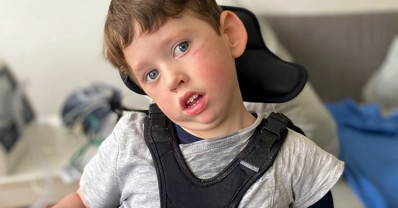
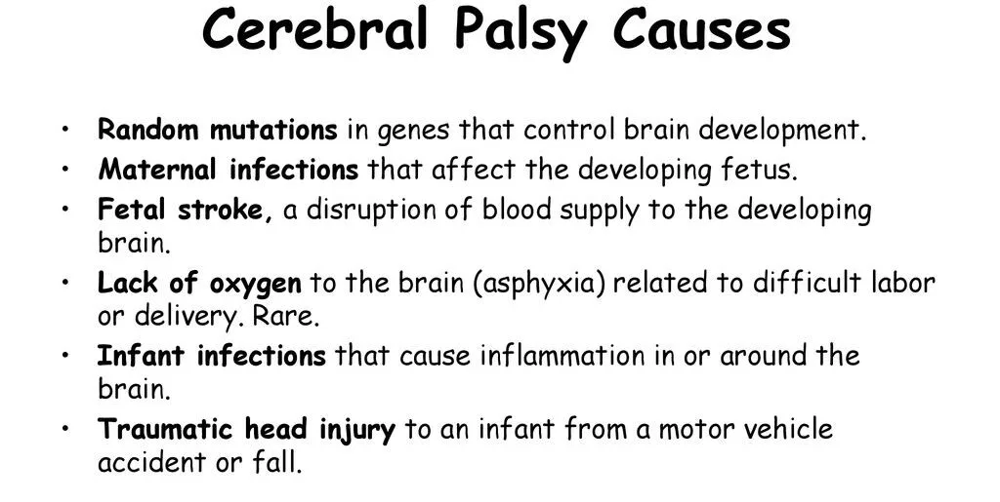
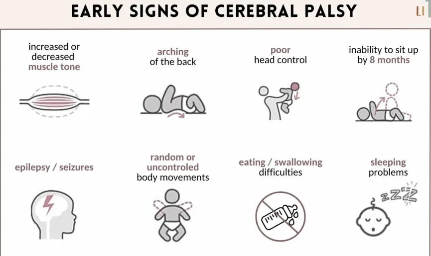
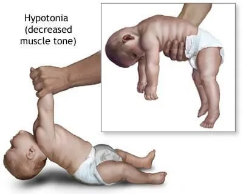
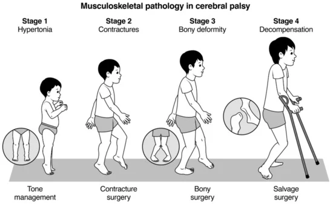
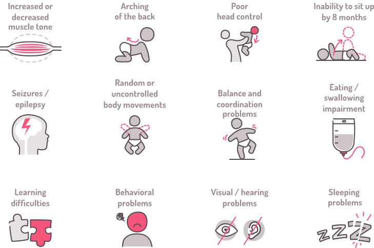
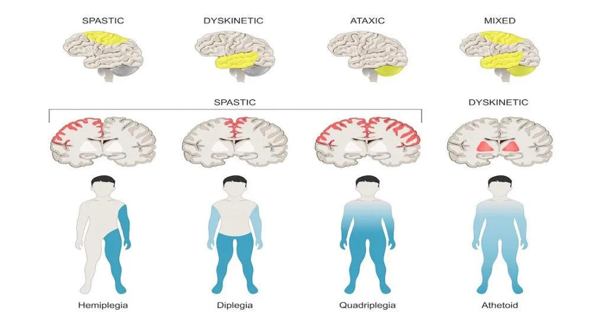
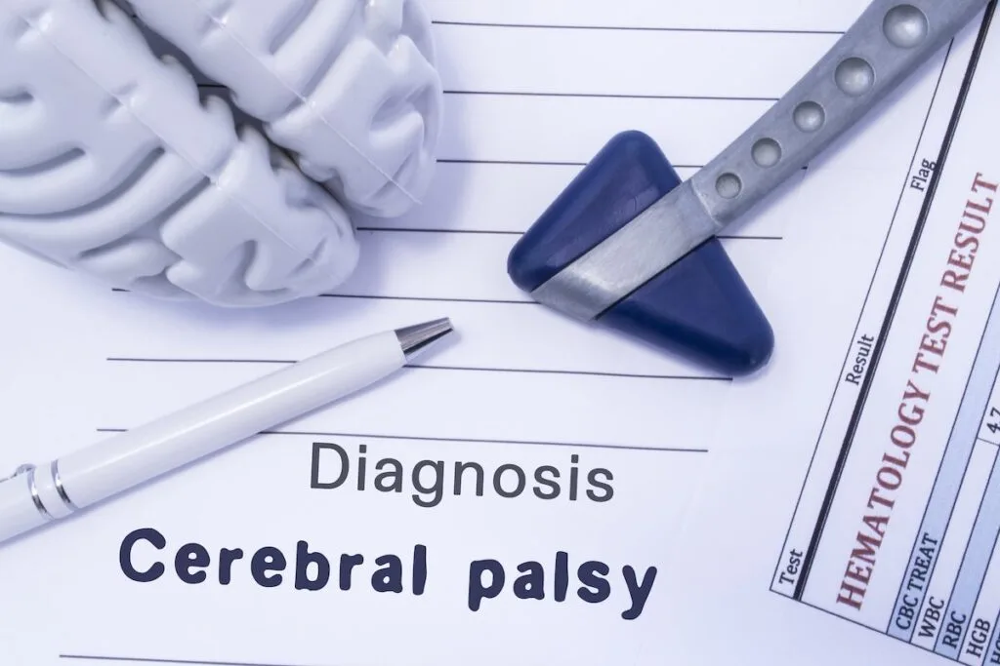

Expanded Nursing Uganda Explanation
Cerebral palsy should be understood beyond a short definition. Link the concept to patient history, focused assessment, common risks, nursing priorities, documentation and evaluation of outcomes.
Contents — 13 sections (tap to expand)
01 CEREBRAL PALSY.
Cerebral palsy is defined as a group of permanent disorders of the development of movement and posture , causing activity limitation, that are attributed to non-progressive disturbances that occurred in the developing fetal or infant brain .”
If your body was a computer, the brain would be the mainframe . It controls mostly everything.
Cerebral Palsy means a brain condition causing paralysis , Therefore its a brain condition that makes the body lose control. It is also considered a neurodevelopmental condition meaning something happens to the brain during its development .
Cerebral palsy is caused by abnormal development or damage to the parts of the brain that control movement , balance and posture . Therefore, severity is according to the part of the brain affected.
Cerebral palsy is the most common movement disorder in children. It occurs in about 1 per 323 live births. Cerebral palsy has been documented throughout history, with the first known descriptions occurring in the work of Hippocrates in the 5th century BCE.
02 Causes of Cerebral Palsy
Most often, the problems occur during pregnancy; however, they may also occur during childbirth or shortly after birth, however, other causes are unknown.
Structural problems in the brain are seen in 80% of cases, most commonly within the white matter. More than three-quarters of cases are believed to result from issues that occur during pregnancy. Most children who are born with cerebral palsy have more than one risk factor associated with Cerebral Palsy.
In Africa birth asphyxia, high bilirubin levels, and infections in newborns of the central nervous system are the main cause.
Before Birth (Prenatal Causes)
Intrauterine Development Issues:
- Exposure to radiation during pregnancy.
- Infections affecting fetal development.
- Fetal growth restriction.
Hypoxia of the Brain:
- Thrombotic events affecting blood flow.
- Placental conditions leading to reduced oxygen supply.
Genetic Factors:
- Autosomal recessive inheritance pattern.
- Inherited cases involving enzymes like glutamate decarboxylase-1.
Prematurity:
- Births before 28 weeks of gestation carry a higher risk.
- Between 34 and 37 weeks, the risk is elevated but lower (0.4%).
Multiple-Birth Infants:
- Increased likelihood, especially with low birth weight.
Genetic Factors in Prematurity:
- Genetic influences contributing to both prematurity and cerebral palsy.
During Birth (Perinatal Causes)
Birth Trauma:
- Injuries occurring during labor and delivery.
- Complications arising just after birth.
Low Birth Weight:
- Term infants with low birth weight are at risk.
Instrumental Delivery or Emergency C-Section:
- Use of instruments or emergency Cesarean section.
Placental Issues:
- Problems with the placenta affecting fetal development.
Meconium Aspiration:
- Breathing meconium into the lungs during delivery.
Birth Asphyxia:
- Oxygen deprivation during birth.
- Seizures occurring just after birth.
After Birth (Postnatal Causes)
- Toxins: Exposure to toxins in the environment.
- Severe Jaundice: High bilirubin levels impacting the brain.
- Lead Poisoning: Environmental exposure to lead.
- Physical Brain Injury: Trauma causing damage to the brain / Abusive head trauma.
- Stroke : Disruption of blood flow to the brain.
- Hypoxia Incidents: Near-drowning incidents impacting oxygen supply to the brain.
- Infections: Infections during early childhood, such as encephalitis or meningitis.
- Maternal Infections: Infections in the mother, even if asymptomatic.
- Chorioamnionitis: Infections of fetal membranes increasing the risk.
- Identical Twin Death: Hypothesized cases resulting from the death of an identical twin in early pregnancy.
- Rh Blood Type Incompatibility: Mother’s immune system attacking the baby’s red blood cells.
- Preterm Birth: Major risk factor, occurring in 40-50% of Cerebral Palsy cases.
- Twin Birth: Being a twin increases the likelihood.
- Infections During Pregnancy: Toxoplasmosis, rubella, and other infections.
- Methylmercury Exposure: Environmental exposure during pregnancy.
- Difficult Delivery and Head Trauma: Traumatic events during the first few years of life.
- Inherited Genetic Causes: Approximately 2% of cases have a hereditary basis.
A newborn with severe CP may present with:
- An irregular posture; their bodies may be either very floppy or very stiff
- Birth defects, such as spinal curvature, a small jawbone, or a small head.
- Unable to suck, swallow or chew
- Lack of control of the head, mouth and trunk
Signs and Symptoms of Cerebral Palsy (CP)
I. Developmental Milestones and Motor Function:
- Delayed achievement of developmental milestones ; Not reaching expected physical and cognitive milestones within typical time frames.
- Abnormal motor development and coordination ; Lack of smooth, coordinated muscle movements during development.
- Unusual gait patterns ; Unusual walking patterns that may indicate motor control issues.
II. Muscle Tone and Reflexes :
- Abnormal muscle tone ; Muscles may be too tight (spasticity) or too floppy (hypotonia).
- Spasticity or hypertonia ; Increased muscle stiffness, making movement challenging.
- Hypotonia in some cases; Reduced muscle tone leading to poor muscle control.
III. Joint and Skeletal Abnormalities:
- Joint contractures ; Limited movement in joints due to tight muscles.
- Dynamic deformities progressing to static deformities ; Irregular bone and joint development due to muscle imbalances.
- Bone and joint deformities due to unequal growth ; Asymmetric bone growth caused by muscle-related stresses.
IV. Coordination and Movement Issues:
- Difficulty with precise movements ; Challenges in performing accurate and controlled movements.
- Incoordination and tremors; Lack of coordination and uncontrollable shaking during movement.
- Challenges in voluntary muscle control ; Difficulty in intentionally controlling muscle actions.
V. Speech and Communication:
- Speech and language disorders ; Difficulty in articulating words or understanding language.
- Dysarthria (impaired speech due to muscle control); Speech difficulties resulting from poor muscle control.
- Non-verbal communication in some cases; Reliance on gestures or other non-verbal cues for communication.
VI. Cognitive and Behavioral Aspects:
- Learning disabilities ; Difficulty in acquiring knowledge and skills.
- Intellectual disabilities in some cases; Below-average intellectual functioning.
- Behavioral challenges ; Emotional or behavioral issues that may impact daily life.
VII. Sensory and Perception Issues:
- Visual impairments ; Problems with vision or visual processing.
- Auditory impairments ; Hearing difficulties or processing issues.
- Sensory processing difficulties ; Challenges in interpreting and responding to sensory information.
VIII. Seizures :
- Epilepsy in a significant percentage of cases; Recurrent seizures affecting brain function.
IX. Posture and Balance:
- Poor posture ; Inability to maintain an upright and balanced body position.
- Balance issues ; Difficulty in maintaining stability during movement or at rest.
X. Fine and Gross Motor Skills:
- Impaired fine motor skills ; Difficulty in performing precise tasks with hands and fingers.
- Difficulty with gross motor skills ; Challenges in performing larger movements like crawling, walking, or jumping.
XI. Feeding and Eating Difficulties:
- Challenges in chewing and swallowing ; Difficulty in the process of biting, chewing, and swallowing food.
- Gastro-oesophageal reflux ; Stomach contents flowing back into the esophagus.
- Nutritional concerns ; Issues related to inadequate nutrient intake.
XII. Behavioral and Emotional Issues:
- Emotional challenges due to limitations; Psychological struggles arising from physical constraints.
- Social difficulties ; Challenges in interacting and forming relationships with others.
XIII. Drooling:
- Excessive drooling due to lack of control; Inability to manage saliva flow.
XIV. Pain and Sleep Issues:
- Chronic pain ; Persistent discomfort or pain.
- Sleep disturbances ; Interruptions in regular sleep patterns.
XV. Orthopedic Complications:
- Scoliosis ; Abnormal sideways curvature of the spine.
- Hip dislocation ; Displacement of the hip joint.
- Skeletal deformities ; Abnormalities in bone structure and shape.
03 Pathological effects of Cerebral Palsy on different body functions.
Urinary System: Lower Urinary Tract Symptoms:
- Excessive storage issues are more prevalent than voiding issues.
- Pelvic floor overactivity in some cases leads to upper urinary tract dysfunction.
Skeletal System: Bone Development:
- Increased risk of low bone mineral density.
- Thin bone shafts (diaphyses) contrasted with enlarged centers (metaphyses).
- Joint compression from muscular imbalances leads to atrophy of articular cartilage and narrowed joint spaces.
- Angular joint deformities and hindered bone development due to spasticity and abnormal gait.
- Height reduction and potential limb length disparities.
Deformities and Conditions:
- Common deformities include hip dislocation, ankle equinus, planter flexion, and torsional deformities.
- Scoliosis prevalence increases with higher GMFCS levels.
- Fracture susceptibility, especially in non-ambulant children, affecting mobility and schooling.
Eating and Nutrition: Feeding Challenges:
- Sensory and motor impairments result in difficulty preparing food, holding utensils, chewing, and swallowing.
- Gastro-oesophageal reflux is common; poor sensitivity around the mouth complicates self-feeding.
Nutritional Risks: Feeding difficulties linked to higher GMFCS levels.
- Dental problems contribute to eating challenges.
- Risk of undernutrition, particularly in severe cases; drooling and associated complications.
Language and Communication: Speech and Language Disorders:
- Dysarthria incidence ranges from 31% to 88%; a quarter are non-verbal.
- Associated with respiratory control, oral-facial muscle movement restrictions, and articulation disorders.
- Early use of augmentative communication systems may aid language development.
- Overall language delay is associated with cognitive issues, deafness, and learned helplessness.
Pain and Sleep: Painful Implications:
- Chronic pain is prevalent, exacerbated by muscle spasms.
- Pain associated with tight muscles, abnormal posture, and joint stiffness.
- Hip migration or dislocation as a significant pain source.
- High rates of sleep disturbance.
- Chronic sleep disorders due to physical and environmental factors.
- Babies with Cerebral Palsy may cry more or face challenges in sleep initiation.
Associated disorders.
Cerebral palsy is often accompanied by other disorders of cerebral function. Associated abnormalities may affect cognition, vision, hearing, language, cortical sensation, attention, vigilance, and behavior. Common conditions associated with cerebral palsy include:
Intellectual Disabilities:
- Around 30-50% of individuals with Cerebral Palsy experience varying degrees of intellectual disability, affecting learning, memory, and problem-solving.
- The severity can range from mild (requiring some support) to profound (needing extensive assistance).
- Early intervention and tailored educational programs can significantly improve outcomes.
Seizures :
- Up to 50% of individuals with Cerebral Palsy have epilepsy, experiencing recurring seizures.
- Various types of seizures can occur, affecting movement, consciousness, and behavior.
- Anti-seizure medications and other therapies can help manage seizures and improve quality of life.
Muscle Contractures:
- These are involuntary muscle shortening and tightening, restricting movement and causing joint pain.
- They can arise due to muscle imbalances, spasticity, and lack of use.
- Physiotherapy, stretching, and sometimes surgery can help manage contractures and improve mobility.
Abnormal Gait:
- Difficulty walking is a common symptom of Cerebral Palsy due to muscle weakness, spasticity, and coordination issues.
- Different types of abnormal gait patterns exist, impacting balance, stability, and walking efficiency.
- Assistive devices, orthotics, and gait training can help improve walking patterns and independence.
Osteoporosis:
- Individuals with Cerebral Palsy have a higher risk of osteoporosis due to reduced bone density, often caused by limited mobility and decreased weight-bearing activity.
- Bone mineral density checks, dietary adjustments, vitamin D supplementation, and strengthening exercises can help prevent and manage osteoporosis.
Communication Disorders:
- Speech and language challenges are common in Cerebral Palsy, affecting articulation, fluency, and comprehension.
- Different types of communication disorders may occur, like dysarthria (motor speech issues), aphasia (language processing difficulties), and apraxia (difficulty planning and executing speech movements).
- Speech therapy, assistive technology, and alternative communication methods can help individuals communicate effectively.
Malnutrition:
- Nutritional challenges can arise due to feeding difficulties, gastrointestinal issues, and decreased energy expenditure.
- This can lead to deficiencies in essential nutrients, impacting growth, development, and overall health.
- Specialized feeding techniques, nutritional supplements, and dietary adaptations can improve nutritional status.
Sleep Disorders:
- Individuals with Cerebral Palsy may experience various sleep problems like insomnia, sleep apnea, and restless sleep.
- These can be caused by medical conditions, muscle tone issues, medications, or environmental factors.
- Good sleep hygiene practices, addressing underlying medical conditions, and specific sleep therapies can help improve sleep quality.
Mental Health Disorders:
- Depression and anxiety are more common in individuals with Cerebral Palsy due to chronic health challenges, social limitations, and emotional strain.
- Early identification, mental health counseling, and support groups can significantly improve mental well-being and quality of life.
Functional Gastrointestinal Abnormalities:
- Digestive issues like constipation, vomiting, and bowel obstruction can arise due to impaired muscle coordination in the digestive system.
- Dietary modifications, medications, and bowel management techniques can help manage these issues and improve digestive function.
04 Classification/Types of Cerebral Palsy
Cerebral Palsy is classified by the types of motor impairment of the limbs or organs, and by restrictions to the activities an affected person may perform.
There are three main Cerebral Palsy classifications by motor impairment:
- Spastic
- Ataxic
- Athetoid/Dyskinetic.
- Additionally, there is a Mixed type that shows a combination of features of the other types.
Spastic Cerebral Palsy where spasticity ( muscle tightness ) is the exclusive or almost exclusive impairment present and is the most common type, affecting over 70% of cases. It is characterized by hypertonicity (increased muscle tone) and neuromuscular mobility impairment.
This damage impairs the ability of some nerve receptors in the spine to receive gamma-Aminobutyric acid properly, leading to hypertonia in the muscles signaled by those damaged nerves.
- Pathology : The condition results from damage to the upper motor neurons in the brain, corticospinal tract, or motor cortex, leading to difficulties in the proper reception of gamma-Aminobutyric acid and causing hypertonia in affected muscles.
- Characteristics:
- Clonus : Involuntary muscle contractions.
- Muscle Spasms : Resulting from pain or stress due to muscle tightness.
- Management : Treatment involves orthopedic and neurological interventions throughout life. Physical and occupational therapy, along with medications like antispasmodics, botulinum toxin, or surgical procedures, may be considered.
Ataxic cerebral palsy is caused by damage to cerebellar structures . Because of the damage to the cerebellum, patients experience problems in coordination , specifically in their arms, legs, and trunk. Ataxic cerebral palsy is known to decrease muscle tone.
- Prevalence : Accounts for 5-10% of Cerebral Palsy cases.
- Cause : Ataxic Cerebral Palsy is caused by damage to the cerebellum, impacting coordination, particularly in the arms, legs, and trunk. It results in decreased muscle tone.
- Symptoms :
- The most common manifestation of ataxic cerebral palsy is intention ( action ) tremor , which is especially apparent when carrying out precise movements, such as tying shoe laces or writing with a pencil.
- This symptom gets progressively worse as the movement persists, making the hand shake. As the hand gets closer to accomplishing the intended task, the trembling intensifies, which makes it even more difficult to complete.
Athetoid cerebral palsy or dyskinetic cerebral palsy (sometimes abbreviated ADCerebral Palsy) is primarily associated with damage to the basal ganglia in the form of lesions that occur during brain development due to bilirubin encephalopathy and hypoxic-ischemic brain injury .
- Characteristics:
- Tonic States: Displays both hypertonia and hypotonia , causing an inability to control muscle tone.
- Subtypes:
- Choreoathetotic : Involuntary movements, primarily in the face and extremities.
- Dystonic : Slow, strong contractions, either localized or involving the entire body.
- Diagnosis : Clinical diagnosis occurs within 18 months, based on motor function assessment and neuroimaging techniques.
****
Mixed Cerebral Palsy presents a combination of symptoms from different Cerebral Palsy types.
- Characteristics : Highly heterogeneous and unpredictable, combining features of spastic, ataxic, and athetoid Cerebral Palsy to varying degrees.
05 1. Clinical Assessment :
History and Physical Examination :
- Thorough medical history to understand prenatal, perinatal, and postnatal factors.
- Comprehensive physical examination to assess motor skills, reflexes, muscle tone, coordination, and other developmental milestones.
General Movements Assessment :
- Especially effective in infants under four months.
- Observes spontaneous movements to detect abnormalities and assess overall motor function.
06 2. Neuroimaging :
MRI (Magnetic Resonance Imaging):
- Preferred over CT due to higher diagnostic yield and safety.
- Provides detailed images of the brain’s structure, helping identify lesions or abnormalities.
- Useful when the cause of cerebral palsy is unclear.
CT (Computed Tomography):
- An alternative when MRI is not feasible.
- Provides detailed cross-sectional images of the brain.
07 3. Blood Tests :
Metabolic Screening :
- Blood tests to rule out metabolic disorders that might present with symptoms similar to cerebral palsy.
- Includes tests for genetic and biochemical abnormalities.
08 4. Electroencephalogram (EEG):
- Detects abnormal brain activity, especially in cases where seizures or epilepsy symptoms are present.
- Rules out or confirms any underlying electrical abnormalities in the brain.
5. Genetic Testing :
- Identifies genetic factors that may contribute to cerebral palsy.
- Useful in cases where there’s a suspicion of a genetic predisposition.
6. Muscle and Nerve Studies:
Electromyography (EMG):
- Measures electrical activity in muscles.
- Helps assess the function of the nerves controlling muscles.
Nerve Conduction Studies :
- Measures the speed at which nerves transmit signals.
- Assesses the integrity of the nerve pathways.
7. Visual and Auditory Assessments :
Vision and Hearing Tests :
- Essential to identify and address any associated sensory impairments.
- Ensures a comprehensive evaluation of the individual’s functional abilities.
8. Developmental and Behavioral Assessments :
- Assesses cognitive and emotional aspects.
- Important for understanding the impact of cerebral palsy on overall well-being.
9 . Orthopedic Evaluation:
- X-rays and other imaging techniques to evaluate bone structure and joint health.
- Helpful in planning orthopedic interventions if deformities are present.
Management of Cerebral Palsy
There is no cure for Cerebral Palsy; however, supportive treatments, medications and surgery may help many individuals. It needs a team of health workers, which include; a paediatrician, social worker, physiotherapist, speech and language therapist, an occupational therapist, a teacher specializing in helping children with visual impairment, educational psychologist, orthopedic surgeon, a neurologist and a neurosurgeon.
Aims of Management.;
- To maximize the child’s movements
- To help the child live well with others
- To correct disabilities
Much of childhood therapy is aimed at improving gait and walking. Approximately 60% of people with Cerebral Palsy are able to walk independently or with aids at adulthood.
- Physical therapy : Helps relieve pain and muscle stiffness, as well as improve balance, coordination, and overall mobility. Physical therapists will use specialized equipment to help your child move more freely and live more independently.
- Occupational therapy : Helps children with cerebral palsy learn how to complete everyday tasks and activities by improving fine motor skills and cognitive abilities.
- Speech therapy: Helps children to improve their communication and language skills. This type of therapy gives children the confidence to learn and socialize. Speech therapy can also help children who have difficulty eating and swallowing.
- Communication aids such as computers with attached voice synthesizers.
- Assistive devices or aids such as Eye glasses, Hearing aids, Walking aids, Body braces, Wheelchairs, e.t.c.
- Medication :
- Anticholinergics : Block neurotransmitters, addressing specific symptoms.
- Anticonvulsants : Suppress neurons to control seizures.
- Antidepressants : Manage mood-related symptoms.
- Anti-inflammatories: Reduce pain and inflammation.
- Baclofen: Muscle relaxer to alleviate stiffness.
- Benzodiazepines: Treat anxiety, seizures, and insomnia.
- Botox: Target spasticity.
- Stool Softeners: Address constipation issues.
- Surgery: Orthopedic surgery may be used to relieve pain and improve mobility. It may also be needed to release tight muscles or correct bone irregularities caused by spasticity.
- Selective dorsal rhizotomy (SDR) might be recommended as a last resort to reduce chronic pain or spasticity. It involves cutting nerves near the base of the spinal column. Rhizotomy is a minimally invasive surgical procedure to remove sensation from a painful nerve by killing nerve fibers responsible for sending pain signals to the brain. The nerve fibers can be destroyed by severing them with a surgical instrument or burning them with a chemical or electrical current.
- Other surgical measures may include lengthening muscles and cutting overly active nerves.
- Some affected children can achieve near normal adult lives with appropriate treatment.
Prognosis
- Cerebral Palsy is not a progressive disorder (meaning the brain damage does not worsen), but the symptoms can become more severe over time.
- A person with the disorder may improve somewhat during childhood if he or she receives extensive care
- Some individuals with cerebral palsy require personal assistant services for all activities of daily living.
- Puberty in young adults with cerebral palsy may be delayed due to nutritional deficiencies.
- Cerebral palsy can significantly reduce a person’s life expectancy, depending on the severity of the condition and the quality of care with which they are provided.
09 Prevention of Cerebral Palsy.
Pre-pregnancy and pregnancy:
- Prenatal care : Early and regular prenatal checkups for monitoring both mother and baby’s health and identifying potential risks like infections, gestational diabetes, or high blood pressure, which can all contribute to Cerebral Palsy.
- Vaccinations : Ensuring that all recommended vaccinations are received , especially those that protect against infections harmful to the developing fetus, such as rubella, cytomegalovirus, and influenza.
- Healthy lifestyle : Maintaining a healthy weight, eating a balanced diet rich in vitamins and minerals, exercising regularly, and avoiding smoking, alcohol, and drugs are all essential for a healthy pregnancy and reducing the risk of Cerebral Palsy.
- Manage chronic conditions : In case of pre-existing health conditions like diabetes or high blood pressure, actively manage them well to minimize potential complications during pregnancy.
During and after childbirth:
- Safe delivery practices : Carrying out delivery from a designated hospital or maternity center and managing any associated birth issued can help ensure a safe and low-risk delivery, minimizing the risk of birth complications that can contribute to Cerebral Palsy.
- Postpartum care : Regular checkups for both mother and baby after birth for monitoring development and promptly addressing any potential issues.
- Vaccinations for baby : Ensure the child receives all recommended vaccinations on time, as they protect against potentially Cerebral Palsy-causing infections like meningitis and encephalitis.
- Preventing head injuries : Implementing safety measures at home and during car rides, using age-appropriate helmets for activities like bike riding, and closely supervising children around water can significantly reduce the risk of head injuries, a potential cause of Cerebral Palsy.
10 Nursing Uganda Clinical Lens
Use Cerebral palsy as a practical nursing topic, not only a memorized definition. Adapt assessment and care to age, weight, development, caregiver knowledge and family support.
- What to understand first: define cerebral palsy, identify the normal or expected pattern, then explain what changes when the patient is unwell.
- Why it matters in care: the nurse must recognize risk early, explain findings clearly, document accurately and know when to escalate.
- How to revise it: connect each point to assessment, nursing diagnosis or care problem, intervention, rationale and evaluation.
11 Assessment Guide
- Airway, breathing, circulation, hydration, temperature, feeding, activity and danger signs.
- Weight-based medicines, immunization status, growth, development and caregiver concerns.
- Signs that may be subtle in children, including lethargy, poor feeding, fast breathing or convulsions.
12 Nursing Priorities, Rationales and Outcomes
- Use age-appropriate communication and involve the caregiver.
- Prevent dehydration, hypothermia, medication errors and delayed referral.
- Teach home care, danger signs and follow-up clearly.
The rationale for these priorities is patient safety: nursing actions should prevent deterioration, reduce discomfort, support recovery and create clear evidence for the next caregiver.
- Expected outcome: The child is clinically improving, caregiver instructions are understood and follow-up is arranged.
13 Patient Teaching and Revision Check
- Explain cerebral palsy in simple language the patient or caregiver can repeat back.
- Teach warning signs, medicine or follow-up instructions, hygiene or lifestyle points where relevant.
- For exams, prepare a short answer using: definition, causes or risk factors, signs, assessment, management, complications and prevention.
- For ward practice, document baseline findings, actions taken, patient response and the plan for review.
Illustrations and Diagrams (11)








3 more diagrams available — open the lesson for full illustrations.
Related Video Lectures
Watch nursing lecture videos on YouTube for this topic. Opens in a new tab.
Watch on YouTubeExternal link: YouTube may use its own cookies and terms. Nursing Uganda is not affiliated with YouTube.